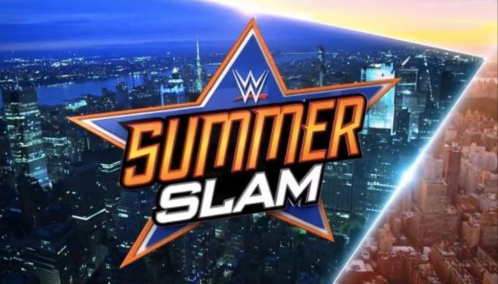
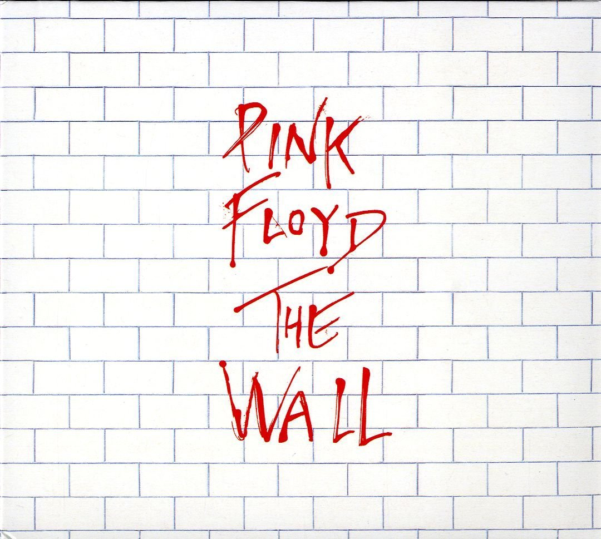
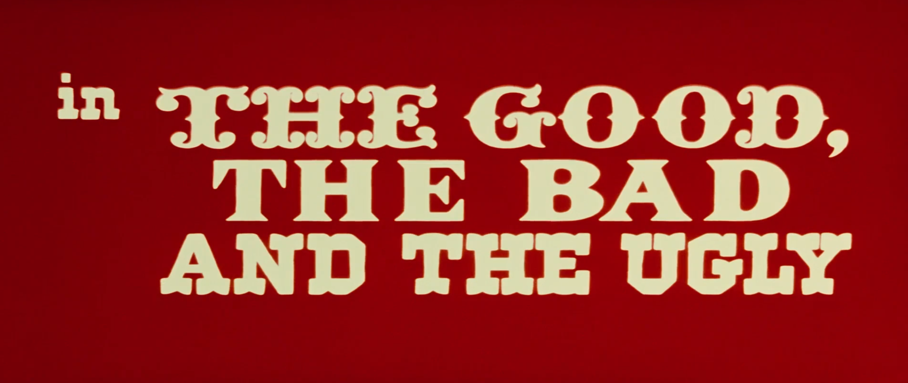
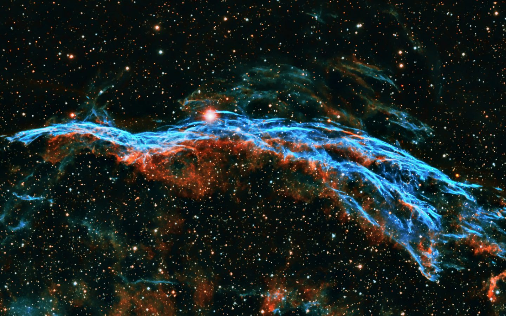

(LATE) WRESTLING REVIEW: WWE SUMMERSLAM 2018
A surprisingly entertaining show, August 22nd, 2018
Given the current rocky state of the creative team at WWE, I came in with low expecations but ended up enjoying this PPV quite a bit!
KICKOFF:
Mixed Tag Team Match - Zelina Vega & Andrade Cien Almas vs. Rusev & Lana
A great opening match, filled with some humorous moments (Tranquilo!!) and some hard spots (Rusev pushing Almas off the top turnbuckle). Lana really began showing her ability in this match - she's getting much better at her in-ring work! Ending leaves a promisin future for this fued.
Vega (w) pins Lana with her feet on the ropes
Rating: 2.5/5
-------------------------------------------------------------------------
Cruiserweight Championship Match - Cedric Alexander (c) vs. Drew Gulak
I haven't watched much of 205 Live, yet everytime I tune in for a Cruiserweight bout, I am absolutely blown away! Gulak did a great job of working Alexander's neck and implementing that injury into the story of the match. Gulak dominated Alexander throughout, yet the champion left with the title. It begs the question: who can actually dethrone the stoic Cedric?
Alexander (c) beats Gulak by pinfall - Retains
Rating: 3.5/5
-------------------------------------------------------------------------
RAW Tag Team Championship Match - The B-Team (Bo Dalls & Curtis Axel) (c) vs. The Revival (Scott Dawson & Dash Wilder)
B-Team have been almost a comedy act at this point, but the crowd love them, and they really do add a fun underdog to root for, especially after living under The Miz's shadow for so long. The Revival took it to the poor rejects the entire match, but Dallas accidentally assisted Axel for the win. A true Kickoff classic!
Axel (c) pins Wilder - Retains
Rating: 3/5
KICKOFF Rating: 3/5
-------------------------------------------------------------------------
MAIN CARD:
Intercontintental Championship Match - Dolp Ziggler (c) w/ Drew McIntyre vs. Seth Rollins w/ Dean Ambrose
Ziggler and Rollins really gave it their all this match. Despite opening the show, they tore the house down, and the crowd was red-hot for Rollins' win. An engaging climax sequence, and an all around electrifying finish!
Rollins (c) pins Ziggler - New Champion
Rating: 4/5
-------------------------------------------------------------------------
Smackdwon Tag Team Championship Match - Bludgeon Brothers (Erik Rowan & Luke Harper) (c) vs. The New Day (Big E & Xavier Woods w/ Kofi Kingston)
Although a stale matchup at this point, the teams really brought intensity and flavor to the ring. The New Day were high flying, and the Bludgeon Brothers (as always) were shocking with their agility and tenacity. An annoying DQ finish, but fun nonetheless
Bludgeon Brothers DQ themselves - Retains
Rating: 3/5
-------------------------------------------------------------------------
Money in the Bank Contract Match - Braun Strowman (h) vs. Kevin Owens
Total, complete squash. Owens took some gnarly bumps and Strowman looked very strong (and plays into the main event) but it all felt very forced
Strowman (h) pins Owens - Retains
Rating: 1/5
-------------------------------------------------------------------------
Smackdown Women's Championship Triple Threat Match - Carmella (c) vs. Charlotte Flair vs. Becky Lynch
The match was decent, but the real show came afterwards. Becky had enough of constantly losing, and (heel?) turns on her best friend, Charlotte. The inevitable fued between them has the potential to be magical
Charlotte (c) pins Carmella - New Champion
Rating: 2.5/5
-------------------------------------------------------------------------
WWE Championship Match - AJ Styles (c) vs. Samoa Joe
A great match! But what else can be expected from two all-time great industry legends like Styles and Joe. The back-and-forth was beautiful; no man looked to be the clear victor, all the way up to the finish. Joe calls out Styles' family once again, and pays the price. I have a feeling this fued will continue to grow and develop into a wonderful anchor for Smackdown
Styles (c) DQs himself - Retains
Rating: 3.75/5
-------------------------------------------------------------------------
Singles Match - The Miz vs. Daniel Bryan
The match was entertaining enough, despite the crowd kind of being dead - and was growing into a exciting final sequence - but Maryse slips The Miz brass knuckles for the win. I hope this fued continues, and at least burns to The Royal Rumble so we could potentially see a Wrestlemania match for the ages.
The Miz pins Bryan
Rating: 3.5/5
-------------------------------------------------------------------------
Singles Match - Constable Baron Corbin vs. Finn Balor
The appearance of "Demon" Balor came as a surprise to me, but really turned what would have been an annoying repeat of Extreme Rules into a story-progressing squash.
Balor pins Corbin
Rating: 1.5/5
-------------------------------------------------------------------------
United States Championship Match - Shinsuke Nakamura vs. "Woken" Jeff Hardy
I almost zoned out during this match - not because I thought it was boring, but because I didn't expect it to be so great! Nakamura and Hardy proved themselves once again as amazing performers, and the crowd ate it up. It seems Randy Orton will be joining the midcard championship picture, and I hope the quality matches continue
Nakamura (c) pins Hardy - Retains
Rating: 3.75/5
-------------------------------------------------------------------------
RAW Women's Championship Match - Alexa Bliss (c) vs. Ronda Rousey
Another squash, but one that showcases Rousey's devastating style and Bliss's cowardice. The beginning of Rousey's title reigns in WWE, and one that I hope will eventually result in a dream match agains Charlotte Flair
Rousey (c) pins Bliss - New Champion
Rating: 2/5
-------------------------------------------------------------------------
MAIN EVENT: WWE Universal Championship Match - Brock Lesnar (c) vs. Roman Reigns
What looked to everyone to be a boring repeat of the last couple years, actually turned out to be exciting - ALL thanks to Strowman. The best thing to come out of this match is the potential for Strowman to cash in his contract at some point and finally earn the title he so rightly deserves.
Roman (c) pins Lesnar - New Champion
Rating: 2.5/5
-------------------------------------------------------------------------
Match of the Night: Intercontintental Championship Match between Rollins (new champ) and Ziggler
MAIN CARD Rating: 3/5
An electrifying experience!
Aidan
ALBUM REVIEW: "THE WALL" - PINK FLOYD (1979)
An emotional masterpiece, flawed by pacing, August 21st, 2018
An album that has hit me at a very vulnerable moment in my life, made all the better by my unabashed love for Pink Floyd and their sound.
The best way to enjoy this album to the fullest, is with just a little bit of context about the state of Pink Floyd's members, musical goals, and reception to public stardom at the time of creation. During the tour for their last album, "Animals" (which may end up in a review as well), the head singer/bassist, Roger Waters, became disillusioned with the fans whom only wished to hear the hits and classics from their masterclass work, "Dark Side of the Moon," and not the songs from "Animals," with their biting social commentary and long instrumental setpieces. At one point, he even spit at fans reaching up at him from right below the stage. He felt, at times, that a "wall" was necessary, both literally and figuratively, between the band and the audience. This growing, irking tension, combined with the previous head singer Syd Barrett's decent into madness and drug abuse, became the inspiration for a story about a young rock star named Pink, and his attempt to build a mental wall to protect himself after suffering years of emotional trauma, at the hands of his school teacher, mother, wife, and many others.
In the first five songs, we receive an intro to the album as a whole and a glance into the oppressive school system Pink lived through. The music is loud, inspiring, but with hints of sadness mixed into the whining guitars of "The Thin Ice," and the funky beats of "Another Brick in the Wall, Pt. 2." In addition, "The Happiest Days of Our Lives" works as a spine-chilling lead-in to the aformentioned hit single, running in with a roaring screech from Waters and the guitar, played by David Gilmour (who would eventually take over as lead of the band after Waters' departure).
At this point, the album enters its second act. Pink is presumably a young artist, singing about his fears to his mother, who is overbearingly protective of Pink, to a fault that scars him emotionally. The song is personal, sung by Waters and played on acoustic guitar, and serves as an early view into Pink's pysche that he would eventually hide from the outside world. Following this, we hear the lamentations of Pink over losing his father in World War II, mixed in with heavy foreboding synths representing the rolling thunder of pain he feels in his heart over his dad's absence. This leads into "Empty Spaces" and then "Young Lust" (which is easily my least favorite song on the record, right after "Vera" off disc two). Pink learns of his wife's infedility, and decides to avenge his feelings by taking intimate relations with a roadie. However, as the final four songs of disc one show, Pink is a broken, unstable man, suffering a psychotic breakdown in the melancholy "One of My Turns," and a total shutdown of all emotion in "Another Brick in the Wall, Pt. 3" and "Goodbye Cruel World."
Disc two begins with "Hey You," a call for Pink to snap out of his funk, and come back to reality (and is also the only song not included on the feature film "Pink Floyd - The Wall," which takes this story to the big screen). This leads to a few songs that are better represented by the visuals and storytelling found in the movie, but still stand as beautiful short pieces in their own right. "Nobody Home" is an often overlooked hit, highlighted by Richard Wright's eloquent keyboard strokes. Next, a song considered by many to be Pink Floyd's greatest ever - "Comfortably Numb" (and one of the few songs on the album not written entirely by Waters). Rogers soulful singing, and Gilmour's iconic guitar solo, create a feeling of loss and biting depression that speaks to anyone who has wondered what it'd be like to not have to feel - and never again experience heartbreak.
The album experiencesa jarring turn at this point - Pink is forced into his next show by his manager, barely standing due to the drugs froced into him to make him performance ready. He begins to hallucinate - believing himself to be some fascist dictator, becoming the very villain that killed his father. The hallucinations begin in "The Show Must Go On," and continues into "In the Flesh," where we see a callback to the intro to the album. Imagining himself ordering a band of Nazi-esque thugs in "Run Like Hell" and "Waiting for the Worms," Pink finally has enough, and demands everyone to "Stop." He is put on trial by his subconcious, where an orchestral score rings out amongst his mental visualizations of his wife and mother begging him to come out from behind his wall, and live again. The record ends on that note, makinga statement that such an emotional structure can certainly protect oneself in the short term, but eventually causes harm to loved ones. It's better to face these problems, with the help of trusted individuals who will love and care for you.
As previously stated, this album rings true for me at an admittedly depressing time in my life, but I know as well as anyone that everything gets better, just as Waters is trying to elucidate to the listener.
Rating: 9/10
"I cant explain, you would not understand. / This is not how I am. / I have become comfortably numb."
Stay positive,
Aidan
MOVIE REVIEW: THE GOOD, THE BAD, AND THE UGLY (1967)
A short opinion on the movie and its highlights, August 20th, 2018
As the inspiration for this blog, I will try to make this post short but impactful, and dense
Right from the first scene of the film, we start to see this running motif of the number three. We are introduced to our main characters: Tuco, Angel-Eyes, and Blondie. We are briefly shown their personalities, and why each is deserving of the role granted to them that the movie's title showcases.
But beyond that, we are shown how all of our characters actually exhibit every facet that the others seems to exude: Angel-Eyes, "the Bad," has an honor code, fulfilling the dying wish of a man he was hired to kill, albiet with financial compensation. Tuco is shown to have a soft side for his brother and family, in start contrast to the heinous crimes he has was convicted for earlier. And blondie, the stoic Clint Eastwood, is briefly reduced to a hobbling cripple after his forced excursion into the desert by Tuco.
We viewers realize that the title does not actually enumerate the three ruffians, but rather is a description they all share: none of them are just good, bad, or ugly, they all are, to different degrees.
An often overlooked facet of this piece of cinema is the subtext of the Civil War waging on in the background, and at times, becomes the full attention of the characters despite their greed and desire for their treasure. In the final act, we see the Union Captain drunkenly ranting about how thousands of innocent soldiers are dying defending one lousy bridge. Blondie and Tuco destroy it mainly to further their own goals, but also feel for the soldiers and their plights, as they are human too.
To the modern viewer, the humanizing characterization of the Confederate troops might come as a surprise. Were they not murderous traitors, fighting for their right to own a human being? Without turning this movie review into a history lesson, YES they were. But at the same time they were people: they had families, loved ones, goals, and at the end of the day, they didn't want to die. And really, who does?
On a more technical note, the cinematography and set design is absolutely spectacular. One really feels like they are there, in the shanty towns, fighting on the battlefields, and a part of the shootouts. Long shots of the surrounding land give a beautiful view of the desert ecosystem, and only enhances the viewing experience
And of course, one cannot discuss this piece of work without mentioning the iconic ending. The spell-binding musical score combined with the nerve-wracking tension built up in the final scene of the three-hour epic, and the ultimate culmination of the main characters' greed and aggressions leads to one of the most heart-stopping and memorable climaxes in cinema history
Rating: 9.5/10
"You see, in this world there's two kinds of people, my friend: Those with loaded guns and those who dig. You dig."
So long!
Aidan
INITIAL POST
Welcome and personal notes, August 20th, 2018
In a way, this might end up being more of a personal online journal for me than a true blog.
I'll try not to let it end up like that! This whole idea came after re-watching a favorite movie of mine. "The Good, the Bad, and the Ugly," directed by Sergio Leone. Widely acclaimed as the pinnacle of spaghetti westerns, I found I was commenting to myself about the movie's structure, motif, and gripping ending.
I consider myself a minor movie buff, and in the past have considered writing as a movie critic in my spare time. I paused, and thought, "Why not just make a website and put my thoughts on there?" And so, the seed of passion was planted into my brain. With my newfound experience with basic html and css from my summer internship, I whipped up this site in a day, and will most likely host it with Amazon Web Services (they have a "free tier" for small sites).
God only knows if I'll continue to keep this up for more thank a couple days, but I can see a fun side activity like this lasting me for many moons.
Until next time!
Aidan
About

Sophmore studying Computer Science and Math at Saint Louis University (SLU)
I made this blog as a personal side project and outlet. I've always wanted to be a critic!
Web Hosting by Amazon AWS
Follow Me/Contact information
(Relatively) Active:
Email: aidan.latham@slu.edu
Steam: AntimonyAidan
Discord: nerdturd007#4005
Github: AntimonyAidan
(Not so) Active:
Twitter: @aidan_latham